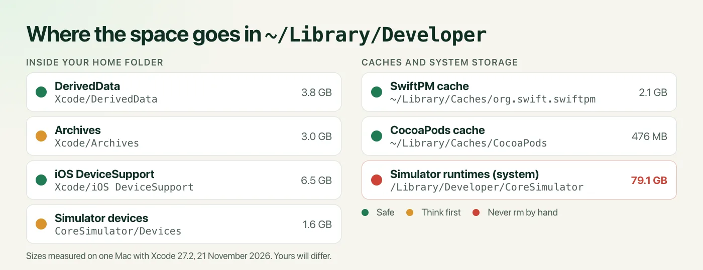
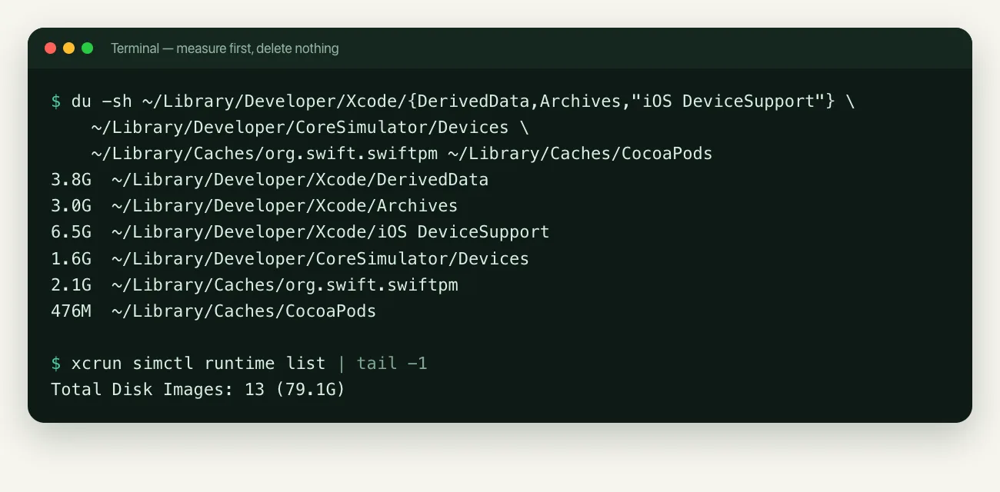
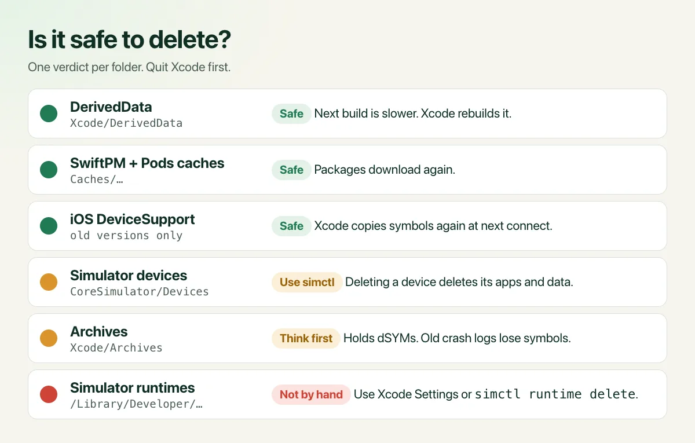
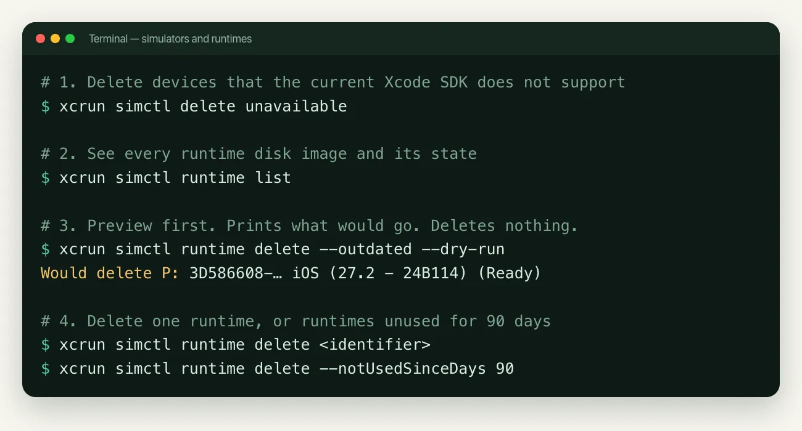
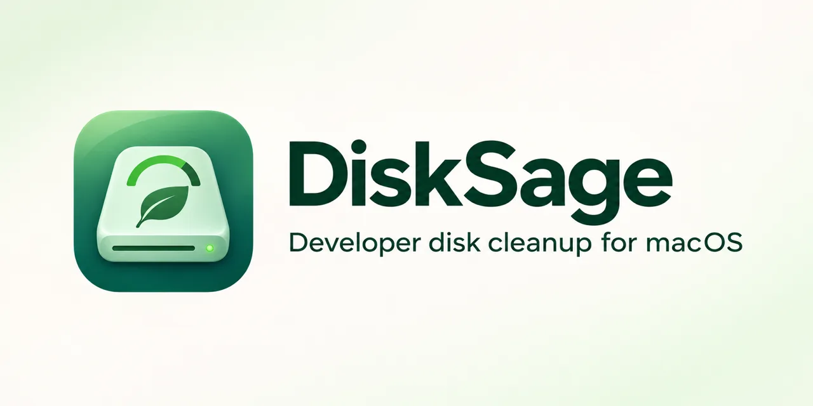
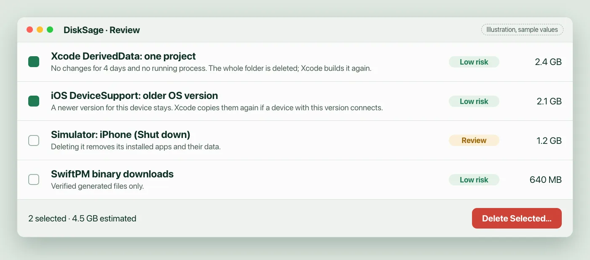

Developer tools · macOS
Is Xcode DerivedData safe to delete? Every folder in ~/Library/Developer
Yes, for DerivedData. Other Xcode folders are not as safe. Here is each folder, what you lose, and the exact command.

Yes, Xcode DerivedData is safe to delete. It holds build products, indexes and caches. Xcode makes them again when you build. You lose only time, because the next build is slower (if you step away during long clean builds, Nightcap Awake keeps your Mac awake while Xcode builds, or compare Nightcap Awake vs Amphetamine and KeepingYouAwake). Quit Xcode first.
Developers say the same in the accepted answer on the Apple Developer Forums. Some other folders are different. Archives hold crash symbols. Simulator runtimes can come back after you delete them. This guide covers each one. It also has one tool that does the review for you: DiskSage, my open source Mac app.
How to clear the Xcode cache: measure first
Do not delete anything before you know where the space is. This command prints sizes and deletes nothing:

Simulator runtimes are disk images. du does not show them well, so I use xcrun simctl runtime list and read the last line.
Every folder in ~/Library/Developer: is it safe to delete?

Swipe or scroll the table sideways to see every column. Check a size with du -sh <path> before you delete.
| Folder | What it is | Safe? | What you lose | Command |
|---|---|---|---|---|
| DerivedData | Build products, indexes, module caches and package clones | Yes | Build time. Xcode makes it again. | rm -rf ~/Library/Developer/Xcode/DerivedData/* |
| UserData/Previews | Data for SwiftUI Previews, with its own simulator set | Yes | Previews start slower | xcrun simctl --set previews delete all |
| iOS DeviceSupport | Debug symbols that Xcode copies from a connected device | Yes, for old versions | Xcode copies the symbols again at the next connect | rm -rf "$HOME/Library/Developer/Xcode/iOS DeviceSupport/<folder>" |
| Archives | One .xcarchive for each archive, with its dSYMs | Think first | The dSYMs of that build | Xcode Organizer, or delete one .xcarchive |
| CoreSimulator/Devices | One folder for each simulator: its apps and data | Use simctl | Installed apps and their data | xcrun simctl delete unavailable |
| Simulator runtimes | OS disk images in /Library/Developer/CoreSimulator | Not by hand | A download of several GB, if you need it again | xcrun simctl runtime delete <id> |
| SwiftPM cache | ~/Library/Caches/org.swift.swiftpm | Yes | Packages download again | swift package purge-cache |
| CocoaPods cache | ~/Library/Caches/CocoaPods | Yes | Pods download again | pod cache clean --all |
| Carthage cache | ~/Library/Caches/org.carthage.CarthageKit | Yes | Carthage fetches it again | rm -rf ~/Library/Caches/org.carthage.CarthageKit |
Sources: the Apple Developer Forums thread on ~/Library/Developer (accepted answer and an Apple DTS engineer); the CocoaPods commands guide; xcrun simctl help and swift package purge-cache --help on my Mac.
Xcode DerivedData location and how to clear it
The default DerivedData location is ~/Library/Developer/Xcode/DerivedData. Each project has its own folder, named with the project name and a hash. To open the folder, run open ~/Library/Developer/Xcode/DerivedData. If you changed the location, look in Xcode Settings, Locations.
- Quit Xcode.
- To clear one project, delete its folder:
rm -rf ~/Library/Developer/Xcode/DerivedData/MyApp-*. - To clear all projects, run
rm -rf ~/Library/Developer/Xcode/DerivedData/*. - Open the project and build. The first build is slow. It makes the files again.
A command line option with a similar name is xcodebuild clean. It works on the build of the scheme that you name. It does not remove the whole folder. To clear the whole folder, delete it.
Your source files, project files and signing certificates are not in DerivedData. An older Apple forum thread says to close the project in Xcode before you delete its folder. I agree.
Delete old Xcode simulators and runtimes
Xcode has two things here. They are different.
- Simulator devices are small folders in
CoreSimulator/Devices. Each one holds the apps and data of one simulator. - Runtimes are the large OS images. On my Mac, 13 images use 79.1 GB.
Apple's DTS engineer says not to remove the CoreSimulator folder by hand. Use Xcode or simctl. To delete simulators that the current Xcode does not support, run xcrun simctl delete unavailable. Its help text says it deletes devices "not supported by the current Xcode SDK". I read this from xcrun simctl help delete.

--dry-run flag prints what runtime delete would remove. It deletes nothing.To delete a runtime in the app, open Xcode, Settings, Components. Select the runtime and click the minus button. Apple's DTS engineer describes these steps in this thread. Xcode shows how much space you get back.
The command line version is xcrun simctl runtime delete. These options come from xcrun simctl help runtime: an identifier, --notUsedSinceDays <days>, --unusable, --outdated, --dry-run and --keep-asset.
Why do runtimes come back after I delete them?
Some people report this. Runtime files can sit in a folder that macOS protects with SIP. One thread says deleted runtimes mount again after a restart. Another thread says Components also left files on disk. An Apple DTS engineer says that disabling SIP to remove them is not supported. One user says Xcode 27.2 beta 2 fixed it.
My advice: never use rm on these folders. Update Xcode, try Components, then try xcrun simctl runtime delete. If a runtime stays, file a report in Feedback Assistant.
Xcode Archives: keep the dSYMs
Each archive in ~/Library/Developer/Xcode/Archives includes the dSYM files of that build. A crash log needs the matching dSYM to show function names. If you delete the archive, you lose that dSYM. Crash logs from that build then show raw addresses.
If you uploaded the dSYMs to App Store Connect or to a crash service, you can delete the archive. If not, keep the archives of builds that users still run. DiskSage does not offer Archives for removal.
Xcode device support: delete old versions
iOS DeviceSupport holds symbols that Xcode copies when you connect a device. There is one folder for each OS version. Delete the folders of versions that you no longer use. Keep the newest one for each device. Xcode copies the symbols again if a device with an old version connects. This is the advice of the accepted forum answer.
Clear the SPM, CocoaPods and Carthage caches
- SwiftPM: run
swift package purge-cache. The help text says: "Purge the global repository cache." - Package clones of one project are in
DerivedData/<project>/SourcePackages. They go when you delete that DerivedData folder. - In a package folder,
swift package resetresets the cache and build directory of that package. - CocoaPods: run
pod cache listto see it. Then runpod cache clean --all. The--allflag skips the question and is required when you give no pod name. - Carthage: the Carthage docs say its cache holds bare Git repositories and prebuilt binaries. Carthage fills it again at the next checkout.
Do it with one review: DiskSage
The table above has nine rows and many commands. I built DiskSage to do the same job in one review. It is a menu-bar app for macOS 14 or later. It is free and open source under the MIT license.

For Xcode, DiskSage scans these places. Each item has a risk label and a reason:
- DerivedData: compiled files, and whole project folders that did not change for some days. Low risk.
- Older DeviceSupport versions: only when a newer version for the same device stays. Low risk.
- Simulator devices: one at a time, only if shut down. Risk label: Review. The reason says that the apps and data go.
- SwiftPM binary downloads and SwiftPM scratch folders. Low risk.
- Other caches that developers fill: npm, Go, Bazel, Homebrew, uv and some Electron apps.
DiskSage does not offer Archives or simulator runtimes. Use the tools above for those. It skips files that changed in the last hour and files that a process has open. It never follows symlinks. A scan shows up to 100 of the largest candidates.

You choose the items. DiskSage asks you to confirm each manual deletion. It keeps a history and a local log at ~/Library/Logs/DiskSage/cleanup.jsonl. In Settings you can add keep rules for paths and for simulator names.
Read this before you install. Deletion is permanent. Items do not go to the Trash. Low-disk automatic cleanup is on by default, at 15 GiB of free space. It removes low-risk targets without a prompt. To start in review-only mode, run this before the first launch:
defaults write com.abdoeaita.DiskSage automaticCleanupEnabled -bool falseThere is no notarized installer. You build it from source with Xcode 27, which is the tested toolchain:
git clone https://github.com/Abdo-codes/DiskSage.git
cd DiskSage
./Scripts/build-app.sh release
open .build/release/DiskSage.appLocal builds are ad-hoc signed. Click the menu-bar drive icon, scan, and choose Review items. DiskSage can also review Git worktrees and has an MCP server for Claude Code and Codex.
Terminal, Xcode, DevCleaner or DiskSage
Each way fits a different person. The table shows what each one does well.
| Way | Best at | Weak at | Cost and install |
|---|---|---|---|
| Terminal by hand | Full control. Reaches runtimes and every cache with simctl and the tool commands. | No risk label. One wrong path deletes the wrong thing. No history. | Free. Built in. |
| Xcode settings | The safe way to remove runtimes (Components). Apple supports it. | Only runtimes and simulators. You still clear DerivedData and caches yourself. Reports of leftovers. | Free. Built in. |
| DevCleaner for Xcode | Archives, DeviceSupport, DerivedData, documentation cache and old logs, in one window. | Its README lists no simulators or runtimes. It uses internal Xcode folder structures. It was tested on Xcode 15. | Free, GPL-3.0. On the Mac App Store. |
| DiskSage | One review with a risk label and a reason for each item, a confirmation, history and keep rules. Also npm, Go, Homebrew and more. | No Archives or runtimes. Permanent deletion. Automatic cleanup is on by default. Build from source. | Free, MIT. Not notarized. |
The README of DevCleaner says to make a backup before you use it. MacPaw's guide says CleanMyMac also clears Xcode junk and the iOS Simulator, with a free trial. I did not test either one. Use DevCleaner if you want Archives in the same window. Use DiskSage if you want one review across Xcode, package managers and agent folders.
Questions
Is it safe to delete Xcode DerivedData? Yes. Xcode makes it again when you build. The next build is slower. Quit Xcode first.
Will deleting DerivedData delete my project? No. Source files, project files and signing certificates are not in DerivedData. Package clones download again.
Where is DerivedData located? ~/Library/Developer/Xcode/DerivedData by default. You can change it in Xcode Settings, Locations.
Can I delete iOS DeviceSupport? Yes, for old OS versions. Xcode copies the symbols again when a device with that version connects.
Why do simulator runtimes come back after I delete them? Forum reports say some runtimes stay in a SIP-protected folder and mount again at restart. Update Xcode and use Components or simctl runtime delete. Do not use rm.
How do I clear the Swift Package Manager cache? Run swift package purge-cache. For one project, delete its DerivedData folder.